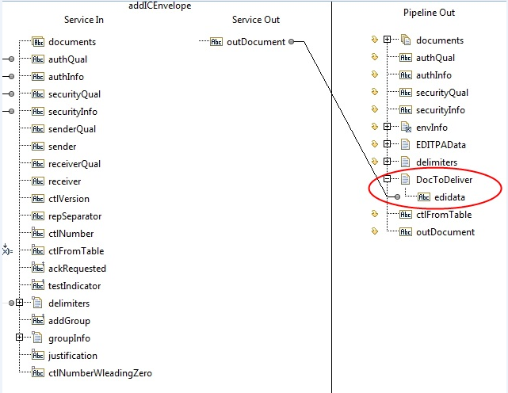
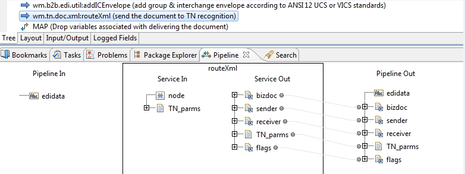
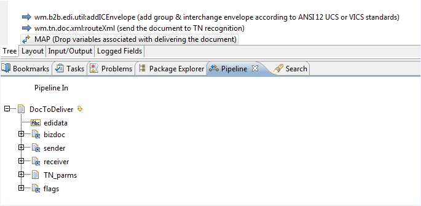

Step | Description |
1 | Select the INVOKE wm.b2b.edi.util:addICEnvelope flow operation. |
2 | In Pipeline Out, create a document. (In the figure below, the new document is named DocToDeliver.) Within the document, create a string named edidata. Then map the output from the addICEnvelope service, which is in the outDocument parameter, to your new edidata parameter, as shown:  |
3 | Click the INVOKE wm.tn.doc.xml:routeXml flow operation and view its properties. In the Properties panel, set the Scope property to the name of the document that you created to hold the output from the addICEnvelope service (for example, DocToDeliver). This causes the INVOKE wm.tn.doc.xml:routeXml flow operation to execute using only the pipeline variables within the specified scope document. |
4 | After setting the scope, when you select the INVOKE wm.tn.doc.xml:routeXml flow operation, Pipeline In contains only the edidata parameter, as illustrated in the figure below.  |
5 | When you use scope, the output from the wm.tn.doc.xml:routeXml service also goes into the document that you used for the scope (for example, DocToDeliver). After invoking the wm.tn.doc.xml:routeXml service, you can drop all parameters in the document that you created, as shown:  |